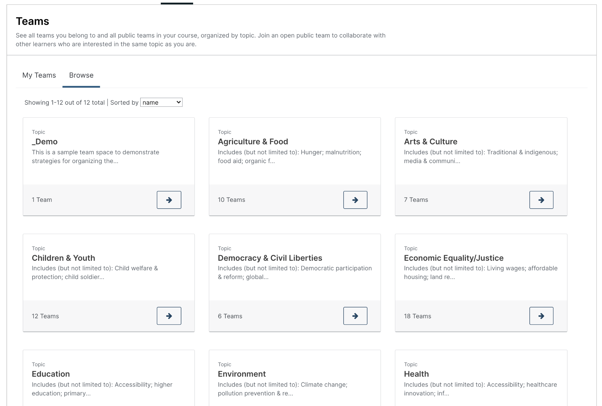
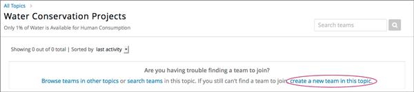
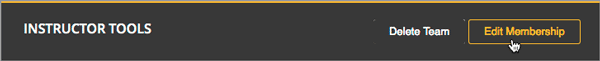
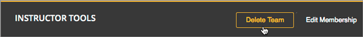
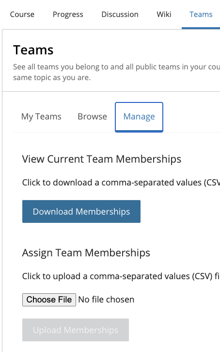

12.3.1. Using Teams in Your Courses#
This section provides information about setting up teams in your courses.
For information about managing teams in your courses, see the following topics.
12.3.1.1. Teams Overview#
Using teams in your course is an effective way for learners to interact and collaborate on small group projects or activities. You define the structure of teams in your course by defining “team-sets”, groups of teams based around a specific topic or assignment. Each learner can belong to one team per team-set, so you can set up a team-set where learners can join a team to discuss a certain course topic, or set up a team-set where learners can join a team to work on a group assignment.
You can also configure “instructor-managed” team-sets. This is a setting which allows course staff much greater control of course teams. In instructor-managed team-sets, instructors create and control the membership of all teams. More information on instructor-managed team-sets and instructions on how to set them up are contained later in this document. To make controlling course team memberships across teams and team-sets easier, there is a CSV upload tool that allows course staff to add and remove learners from teams across team-sets in bulk. More information on this tool can be found in the section Managing Teams via CSV Upload
When a team is created, it is given an name and description to identify it. A primary communication language can optionally be specified and a primary country that members identify with. Team characteristics might serve as the basis for attracting new members, resulting in small groups of learners with similar interests and goals who will work together on projects or activities within the same topic area.
Teams are most effective when learners have a clear reason for joining a team, and a clear outcome to achieve with fellow team members. For example, you might create an assignment that consists of a group project or activity, and ask learners to join teams of their choice within a specific team-set to complete the assignment. Team members can use discussions within the team to communicate and collaborate on the assignment. If you want only to provide a way for learners to connect socially, consider using discussions within the course rather than teams. For more information about using discussions, see Running Course Discussions.
12.3.1.2. Enable and Configure Teams#
To disable or enable the Teams application, follow these steps.
In Studio, from the Content menu select Pages & Resources.
Click the gear icon on the Teams card shown on this page.
From the Configure teams modal, select the toggle to enable or disable the teams application.
Select Apply to save your configuration changes.
Note
The Teams page in the LMS becomes available only after you have specified at least one team topic.
There are several configuration options available to the Teams application. Many basic configuration options are provided within Studio’s Pages & Resources area, and course management capabilities are available to instructors directly from the Teams application. Included below are details about both the configuration options and management tools.
To change access to the course team configuration options, follow these steps.
In Studio, from the Content menu select Pages & Resources.
Click the gear icon on the Teams card shown on this page.
From the Configure team modal, adjust any of the configuration settings as described below to fit your course needs.
Select Apply to save your configuration changes.
Default Team Size
This specifies the maximum number of learners that can join a team, a default value for all teams in your course. This default value can be overridden for a specific team group as well. This value has a hard limit and cannot exceed 500, but in practice, this should be significantly lower. Teams should rarely have many learners in them at all. If you have a use case where a large number of users need to be in a team, consider using discussions rather than teams.
Team Groups:
Each team group is a grouping for multiple learner teams. To start, each of these team groups must be given a unique name, and optionally a description can also be set.
These names and descriptions are visible to learners in the Teams application as shown in the visual below.

Note
EdX recommends that you do not delete topics once your course is running, and if learners might have already joined teams within topics. If you delete a topic from the Teams Configuration policy key, that topic is no longer visible in the LMS, and learners will not be able to leave teams associated with the deleted topic.
Types of Team Groups
There are several types of team group that can be created, each of which behaves differently for both instructors and learners.
Open sets up a team group where learner can create, join, leave, and see all teams within the group
Public managed allows only course staff to control team creation and membership. Learners can see other teams but cannot join or leave their team.
Private managed allows only course staff to control team creation and membership. Additionally, learners can only see the teams they are members of, unlike other options that give them visibility into other teams. This type is helpful in particular if team assignments are being used in a course.
Note
If you do not see all team group type options, check with your platform administrator to see if the relevant teams application features have been enabled.
Team Group Size Override
Separate from the team maximum size setting, it is possible to override the specific team size for a given team group, allowing you to adjust team sizes to fit your course needs.
12.3.1.3. Create a Team#
Although learners in your course may be able create their own teams in open team-sets, you can seed open team-sets with a few teams to give learners some ideas for their own teams.
For instructor-managed team-sets, you can also create teams in bulk, using the CSV upload tool. See Managing Teams via CSV Upload
Course team members who have the Staff, Admin, Discussion Admin, or Discussion Moderator role can create new teams within team-sets. Community TAs and learners in the course can also create teams, although learners can create a new team only in open team-sets and only if they do not already belong to a team in that team-set.
To create a team, follow these steps.
From the Teams page in the LMS, select Browse, then select the team-set in which you want to create a team.
At the bottom of the list of teams within the team-set, select the create a new team in this team-set link.

{kind=link}
On the Create a New Team page, add a name and description for the team.
In the description, include details about the proposed project or activity to help learners to decide whether they want to join this team.

Optionally, add some characteristics for your team. You can specify a language that members would primarily use to communicate with each other, and a country that members would primarily identify with. Keep in mind that if your team details make the team membership seem too selective, learners might be discouraged from joining.
When you have finished entering details for the team, select Create.
Your new team is added to the list of teams under your selected team-set.
12.3.1.4. Search for a Team#
Use the search field to find a team within a team-set.
Note
Partial words are not supported for searching teams.
To get a list of teams whose names, descriptions, or characteristics match your search keywords, follow these steps.
From the Teams page in the LMS, select Browse, then select the team-set in which you want to find a team.
In the search field, enter one or more keywords to search for, then press Enter or select the search icon.
Teams within the team-set that match your search are displayed.
To clear the existing search term, select the X next to the search field, or select all the text within the field and enter text to replace it.
12.3.1.5. Edit a Team#
Course team members who have the Staff, Admin, Discussion Admin, or Discussion Moderator role can edit any of a team’s details, including removing members from a team. Community TAs can also edit teams. For more details about removing team members, see Remove a Learner from a Team.
To edit a team’s details, follow these steps.
Note
Before making significant changes to a team, communicate with team members so that they are aware of the changes and their impacts.
In the LMS, select the Teams tab.
On the Teams page, select Browse to show all team-sets.
Select the arrow button for the team-set to show all teams in that team-set.
Locate the team that you want to edit. To find the team, you can search using keywords or sort teams by last activity or open slots.
Select View for the team that you want to edit.
Select Edit Team.
Make your changes, then select Update. The team’s details are updated.
12.3.1.6. Remove a Learner from a Team#
Course team members who have the Staff, Admin, Discussion Admin, or Discussion Moderator role can remove members from a team. Community TAs can also remove learners from a team. You might want to remove a learner from a team and make the spot on the team available to other learners if, for example, a learner joined a team but is not participating, or if a learner has unenrolled from the course without leaving the team.
For instructor-managed team-sets, you can also remove learners from teams using the CSV upload tool. See Managing Teams via CSV Upload
Note
Before making significant changes to a team, communicate with team members so that they are aware of the changes you will make, and their impacts.
To remove a learner from a team, follow these steps.
In the LMS, select the Teams tab.
On the Teams page, select Browse to show all team-sets.
Select the arrow button for the team-set to show all teams in that team-set.
Locate the team that you want to edit. To find the team, you can search using keywords or sort teams by last activity or open slots.
Select View for the team from which you want to remove a learner.
Select Edit Team.
On the Instructor Tools bar, select Edit Membership.
On the team’s Membership page, select Remove next to the name of the learner who you want to remove from the team.
In the confirmation message, select Remove.
The team member you removed no longer appears on the Membership page.
Repeat steps 8 and 9 to remove additional members.
The team members you removed no longer appear on the Membership page, and the count of team members is updated wherever it appears on team pages.
{kind=link}
12.3.1.7. Delete a Team#
Course team members who have the Staff, Admin, Discussion Admin, or Discussion Moderator role can delete teams. Community TAs can also delete teams. you might need to manage the teams in your course, including deleting teams that remain empty or where members are experiencing abusive situations.
When you delete a team, all learners are removed from the team membership. Neither learners nor course team members can access discussions from deleted teams.
Note
Deleting a team removes it permanently from the course, and cannot be undone.
To delete a team, follow these steps.
In the LMS, select the Teams tab.
On the Teams page, select Browse to show all team-sets.
Select the arrow button for the team-set to show all teams in that team-set.
Locate the team that you want to delete. To find the team, you can search using keywords or sort teams by last activity or open slots.
Select View for the team that you want to delete, then select Edit Team.
On the Instructor Tools bar, select Delete Team.
In the confirmation message, select Delete.
You return to the team-set page, where you receive a confirmation that the team has been successfully deleted. The team no longer appears in the teams list within its team-set. Learners who were previously members of this team no longer belong to a team.
{kind=link}
12.3.1.8. Managing Teams via CSV Upload#
12.3.1.8.1. Initial Setup#
There are cases where an instructor may want to manage team membership within a course
(e.g. assigning groups for team assignments). To do this, an instructor must configure
a team-set as public_managed or private_managed by following the Teams Configuration guide.
When this condition is met, an instructor can navigate to the Teams tab where the Manage sub-tab will now be available alongside the My Team and Browse sub-tabs. Clicking the Manage tab opens the Manage page where team membership can be viewed and modified.
{kind=link}
12.3.1.8.2. Membership CSV File Schema#
Team membership assignments are done through a CSV file upload. The membership CSV is formatted as follows:
user, mode, <team-set>, <team-set>, <...>
<user-identifier>, <enrollment-mode>, <team-name-or-empty>, <team-name-or-empty>, <...>
<user-identifier>, <enrollment-mode>, <team-name-or-empty>, <team-name-or-empty>, <...>
<...>
The header row contains the headers “user”, “mode”, and an entry for each team-set within a course.
For example, a course with 2 team-sets (discussion-teams and case-studies) would start like this:
user, mode, discussion-teams, case-studies
Each additional row is a user row and has a user-identifier
(which, in priority order, is the student-key, edx-username, or edx-email),
enrollment mode (one of audit, verified, or masters), and the team assignment for the matchin
team-set in the header row. For example, here are 8 students assigned across different teams in the 2 team-sets:
user, mode, discussion-teams, case-studies
alice, verified, Team 1, Team A
bob@example.com, verified, Team 1, Team B
mitx_39181873, verified, Team 1, Team C
derek, verified, Team 2, Team A
edith, verified, Team 2, Team B
felicia, verified, Team 2, Team C
garrett, verified, , Team C
hannah, masters, Team A, Team 1
Note that since teams are only unique within a team-set, the “Team A” that hannah is a member of for the “discussion-teams” team-set is different from the “Team A” in “case-studies” that alice and derek are assigned to.
12.3.1.8.3. Managing Teams#
Note
Prerequisites: at least one managed team-set configured for course
From the Teams > Manage page, an instructor can use a CSV file, formatted per the schema above, to manage team memberships.
An instructor should first get current memberships by going to the View Current Team Memberships section and clicking the Download Memberships button. This downloads a membership CSV file showing all enrolled students and configured team-sets for the course.
Staff can then modify this document (as below) before browsing to the file and uploading it in the Assign Team Memberships section.
12.3.1.8.3.1. Actions#
A user can be added or moved to a team by adding the team-name in the appropriate team-set column.
If the team does not already exist within the team-set a new team will be created.
Note
team-name and team-set * are case sensitive. *
A user can be removed from a team by removing the team-name from the appropriate team-set column,
leaving the entry empty.
Note
team-sets cannot be created from within the Manage tab. They must be created by following the Teams Configuration instructions.
Users and team-sets that are not included in the uploaded CSV are not altered.
12.3.1.8.4. Examples#
12.3.1.8.4.1. Initial Setup#
Remus Lupin is setting up his course, Defense Against the Dark Arts and wants to assign groups for his students
to write about different dark creatures and curses. Following the Teams Configuration instructions, he sets up
two managed team-sets, dark-creatures and curses.
Next, he goes to the Teams > Manage page and clicks Download Memberships to get the following membership CSV:
user, mode, dark-creatures, curses
harry, verified, ,
ron, audit, ,
luna, verified, ,
draco, verified, ,
hermione, masters, ,
cho, masters, ,
Lupin splits his students into several teams, making sure to not put masters and non-masters students on the same team,
and edits the CSV accordingly:
user, mode, dark-creatures, curses
harry, verified, Dragons, Mimble Wimble
ron, audit, Dragons, Morsmordre
luna, verified, Werewolves, Morsmordre
draco, verified, Werewolves, Mimble Wimble
hermione, masters, Basiliks, Expulso
cho, masters, Basiliks, Expulso
In the Assign Team Memberships section, Lupin browses to his updated membership CSV and clicks Upload Memberships.
The new teams are created and his students are assigned to the corresponding teams: Harry and Ron are assigned to the
“Dragons” team for the dark-creatures team-set. Harry is assigned to the “Mimble Wimble” team in the curses
team-set, while Ron is on the “Morsmorde” team, and so on.
Later, Lupin goes back to the Teams > Manage page to download new memberships and finds that Fred and George joined the class after the initial team assignments.
user, mode, dark-creatures, curses
harry, verified, Dragons, Mimble Wimble
ron, audit, Dragons, Morsmordre
luna, verified, Werewolves, Morsmordre
draco, verified, Werewolves, Mimble Wimble
hermione, masters, Basiliks, Expulso
cho, masters, Basiliks, Expulso
fred, audit, ,
george, audit, ,
He decides he wants to add them to the “Werewolves” and “Dragons” teams for the dark-creatures team-set but wants them
on a new “Confringo” team for curses.
user, mode, dark-creatures, curses
harry, verified, Dragons, Mimble Wimble
ron, audit, Dragons, Morsmordre
luna, verified, Werewolves, Morsmordre
draco, verified, Werewolves, Mimble Wimble
hermione, masters, Basiliks, Expulso
cho, masters, Basiliks, Expulso
fred, audit, Werewolves, Confringo
george, audit, Dragons, Confringo
Uploading this updated CSV, the new “Confringo” team is created and Fred and George have been assigned to their respective teams.
12.3.1.8.5. Error Conditions#
Header must contain column ‘user’ / Header must contain column ‘mode’
The CSV is improperly formatted: the first row must contain the headers “user” and “mode”, in that order (see Membership CSV File Schema).
Teamset with id [ID] is duplicated
A team-set cannot be listed more than once in the header of the CSV file. Remove the duplicated column and confirm desired team mappings before re-uploading.
Teamset with id [ID] does not exist
Team-sets must be configured in Teams Configuration before teams can be assigned. Teams, however, can be created directly from the Membership CSV.
Team(s) [team] don’t have matching teamsets
The team was entered in a column without a team-set, often caused by a column number mismatch or stray comma. Correct the typo and re-upload.
Username [name] listed more than once in file
Users within a file should be unique. Remove the duplicate row and confirm desired team mappings before re-uploading.
User name/email/external key: [ID] does not exist
The ID in the “user” column (which could be a username, email, or external key) did not map to a user in our records. Correct any typos and re-upload.
User [username] is not enrolled in this course
Users must be enrolled to be assigned to teams in a course. Remove or enroll the unenrolled user before re-uploading.
User [username] enrollment mismatch
The user “mode” specified in the CSV file does not match the user’s actual enrollment mode. Downloading memberships should automatically populate the correct enrollment modes for each enrolled user. Alternatively, correct the user’s enrollment mode making sure that team assignments do not mix masters and non-masters enrollment modes and re-upload.
Team [team] cannot have Master’s track users mixed with users in other tracks.
FERPA protections prohibit masters and non-masters (audit and verified) enrolled students from being on the same team.
If the team already exists, the enrollment mode of the first member assigned to that team sets the team’s protection level.
For example, if the first member assigned to a team is a non-master’s student, masters students cannot join.
If this team will be newly created through the CSV upload, the team makeup must be exclusively masters or non-masters
students to pass validation. Edit team mappings to create designated teams for masters and non-masters students and re-upload.
New membership for team [team] would exceed max size of [max-size]
Team-sets have a max-team-size configured in Teams Configuration.
The newly proposed team memberships would exceed the capacity of the given teams.
Increase the team-set size or redistribute users to different/more teams and re-upload.